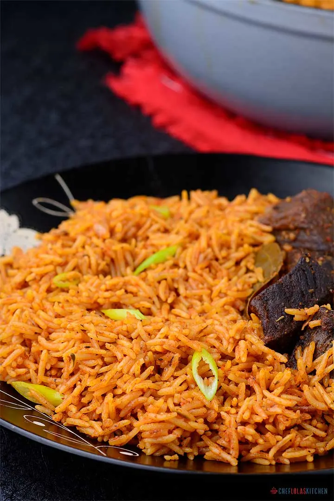

title
Oven-baked jollof rice recipe.
Oven Baked Jollof Rice – Here is another take on Jollof Rice, one of the most famous West African one pot meal. Simplicity, is what sets apart the stove top from the oven baked method of cooking Jollof rice.
Delicious Oven Baked Jollof Rice to please everyone!

Oven baked Jollof Rice
Hardly will you go to any Nigerian party and not find this delicious meal. Talking about party foods, you need to try this East African beef and potato pilau. This is also one delicious meal that can never be missing in most East Africans parties. It’s smells heavenly but tastes even better – I’m sorry for the deviation but I think it’s worth mentioning.

The stovetop method of cooking Jollof Rice can sometimes be a little intimidating even to the best of cooks but this oven-baked method makes it easier to deal with, and the best part is, you will have nothing burnt.
The oven method of cooking Jollof rice makes the cooking process a little easier without compromising on the complex flavor of the rice.
Though, I know some enthusiasts may not want to stray from the classics but then, you never know maybe if you make it once, it might become regular on your table just like it happened to me. You can also check other rice recipes here.
The preparation of Jollof varies from family to family. However, traditionally, Jollof contains the following
- Peppers – Choose bright red pimento or bell peppers it helps to brighten the color of the rice.
- Tomatoes – Ripe red juicy tomatoes work best for this recipe.
- Onions – I have tried using different varieties of Onions. I love it all. Any variety works well for me.
- Chicken Stock – I always use homemade chicken stock. However, any
- Long Grain Rice – I always like to use the long grain Rice usually labeled as “Parboiled long Grain rice”. An example is the uncle ben’s Rice. This type of rice is more durable – it doesn’t get mushy easily. Note that, there are other good brands out there that are not as expensive as the brand I mentioned.
- Vegetable Oil – Any good vegetable Oil will work for this recipe. However, I will suggest peanut Oil (groundnut Oil) or any other mild tasting oil – A strong tasting Oil might affect the overall taste of this dish
- Other Ingredie
- salt
- Thyme
- curry powder
- Stock cubes
- Bay leaves
- Ginger
- garlic
- Carrots
- Green beans
- Sweet peas
- Sweet corn
- or a mix of any of these vegetables

NOTES
- You will need an oven-safe pot or pan for this recipe.
- The total liquid content of the Sauce is 4 Cups for the 3 cups of dry Rice. You may need to reduce this by half of a cup if you use Basmati Rice or Jasmine Rice.
- You can add more water if you feel the Rice is still hard after your cooking time but make sure you add a little at a time because a little water goes a very long way.
- It’s advisable not to open the oven until after about 45 minutes so that the trapped steam in the Oven will not escape.